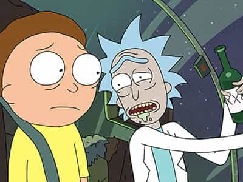
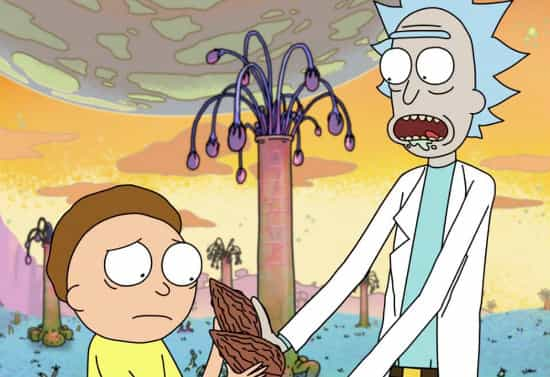

Rick & Morty is a new cartoon on Adult Swim. It was created by Dan Harmon (creator of Community) and Justin Roiland. You can watch the pilot here, as well as other episodes.
The premise of the show is a young boy—Morty—who lives with his parents who are in a broken, high-conflict marriage. They got married because Morty’s father (Jerry) knocked Morty’s mother (Beth) up in high school, so Morty has an older sister named Summer. His alcoholic grandfather Rick moves in with them, bringing all the baggage he dragged Beth through as a child. Beth still idolizes her father, despite his failings.
They all live in a middle class home and both Rick and Morty go on all sorts adventures that Rick basically forces Morty into. Season One isn’t complete yet, but so far we have an episode with dogs taking over the world while Rick and Morty incept Morty’s math teacher, Rick tries to build an amusement park inside a dying alcoholic’s body and another where Morty tries to cobble together an adventure but they end up arrested for “murdering” a giant and Morty almost gets raped by a pedophile in a bar bathroom.

Rick is a brilliant scientist with a deeply troubled history. He abandoned Beth’s mother at an early age and his history is vague at this point. All we know is that Rick has run from just about any serious emotional or psychological commitment. His extraordinarily intense devotion to science has clearly resulted in a life of sheer brilliance. Second to this devotion is his crippling level of alcoholism. He is seemingly in a perpetual state of drunkenness with his constant belching, drooling and drinking out of a small drink container (his spaceship is always full of beer bottles). Rick is terminally mean and self-centered. He rarely treats Morty with respect, often just treating him as an object to advance his own ambitions. He does display compassion, but only in extreme situations, such as when he realizes Morty was almost raped.
![[Image: 1386872836000-oliver.jpg]](../www.gannett-cdn.com/-mm-/96e6b705f92caee6f329f05d222f6f2d94a5afb1/c=80-0-577-373&r=x404&c=534x401/local/-/media/USATODAY/popcandy/2013/12/12/1386872836000-oliver.jpg)
Morty is a 12 year-old boy who has all the typical trappings of young men his age: just hitting puberty, awkward with girls and a not-yet solidified sense of self. He doesn’t have a good relationship with his parents, as his parents are more interested in their own lives than the lives of their children. His sister, Summer, immerses herself in the mindless trivialities that most girls her age, 16, drown themselves in. As for Morty, we don’t know too much about his interests at this point, as Morty exists primarily as an extension of Rick. He shows an interest in video games and nurses a gigantic crush on a girl named Jessica at his school.
The show certainly benefits from the creativity of its writers, who have a biting and dark sense of comedy. Rick has some excellent one liners, as does Morty. The show has very good pace and none of the episodes so far have even been close to clunkers. They came out swinging and have delivered in every episode.
An easy observation about the show is that is a pretty explicit allegory about how alcoholics treat people around them. So far in the show, Rick has almost killed Morty’s crush Jessica, let dogs take over the world, exploded a giant, naked Santa hovering over the US in space and turned the entire world—except Morty’s family—into giant preying mantises, then into “Cronenburgs.” Rick exhibits no compassion or empathy and cares only about his scientific exploits and his incessant drinking. The episode that featured the amusement park has Rick sitting back, nursing a drink as Morty and his crew are facing death from diseases like Hepatitis B attacking them.
A wider view is that the show is an allegory for how late-narcissistic societies operate. The young Morty is somebody who—in class—might wonder aloud why blacks didn’t just rise up and challenge slavery and racism. The nervous fidgeting of his female classmates might tell part of the story, maybe a black classmate might have stray thoughts about Morty’s “racism,” but what Morty would be showing is how he hasn’t learned about the system, about America. He hasn’t internalized the utter hopelessness of modern America. Like Morty is learning through both his parents and Rick, Morty is quickly learning that he is a cog, a building block in a descending society.
What Morty shows off is the painfully honest idealism of a young boy. He entertains notions of romance with a young girl. A girl untainted by the Sexual Revolution who may very well end up on the wrong side of 30, childless and a bitterness that surges through her veins in a way only a person with estrogen also surging through those veins can understand. His aborted attempts to connect with Jessica have always been thwarted by Rick, as Rick either gives Morty bad tactics (when he provided Morty with a love potion) or prevents him from connecting with her when she shows interest. Blocked from experiencing life as any young boy needs to in order to grow, he is shunted into Rick’s fantasy world.

Rick displays a startling levels of indifference towards Morty’s parents (Jerry and Beth). One episode starts with Rick and Morty walking into the kitchen, as Jerry is—yet again—fretting over his tenuous relationship with Beth. Rick grabs a generic beer from the fridge, pops it open and wonders aloud, “Yeah I get, you knocked up my daughter, Jerry. Most marriages end in failure so who cares.” Morty is mortified, as is Jerry, but Rick doesn’t care. He tells Morty to follow him and as Morty is learning he does just what Rick says.
This is a subtle allegory to how adherence to narcissism works. Morty’s sublimation of his identity into Rick’s desires is clearly indicative of an unhealthy relationship, but given Rick’s only concern with his interest in his identity and his alcoholism, it is a narcissistic relationship. What Rick is showing Morty is how modern America works. You either get busy conforming and doing what you are told by “experts” in media or you get busy identifying yourself as somebody who is a problem. Your existence, at times, is painfully aware to those around you, like in Inception.
Morty is quickly learning that to play the narcissistic game and seek their approval is a fools errand, but a game he doesn’t know how to escape. Much like most American men, they can feel the bombs going off around them, but have no idea where they are coming from. They see their fathers stripped naked in divorce court and they see their friends treated like dry husks of meat by indifferent females. Guys might play the MRA game and talk about “misandry,” but that is just as misguided as women bitching about “misogyny.” The system doesn’t hate you—it simply doesn’t care about you at all. Stop trying to convince yourself that the system gives two squirts of piss about you; we are all nothing but one face in a sea of millions.
As for Morty, personally, he is realizing his own lack of autonomy and ability to find love a young boy needs. His own sister has already strung up the white flag and is completely superficial and addicted to social media as a substitute for real, human connection. His parents? Still arguing, having 3 out of 7 good days and more interested in their own self-image. Beth sees herself as a woman trapped in a failing relationship, but does nothing to ameliorate the situation. Jerry feels he doesn’t deserve Beth and ports this out as jealousy and weak, controlling behavior. Jerry is a classic beta whose problems stem from believing he doesn’t measure up as a man and is threatened by people who he perceives to be better than him.
The truth is that Morty is the typical young boy who will most likely become a beta. A beta is simply a man who wants to want to be a man, but he has little willpower to transform his life. He might end up like Rick, who has alpha credentials with his indifference, brilliance and naked self-absorption. Yet, we see what train Rick enters the station as: a man who will die from his own addictions and predilections. However, most likely, Morty will end up a listless beta, one who has no sense of healthy family life nor the ability to be independently attractive to females. He will have fantastic stories to tell—as any boy who endured such abuse has—but will never do anything but pique a woman’s interest temporarily.
That being said, you may think that the show is more art than science, but the truth is that anybody who has endured such untoward childhood experiences has a vast array of stories to relate. I have a female friend whose alcoholic father has resulted in her having a litany of engaging—but deeply saddening—stories to tell. Just like Morty, she has so many fantastical stories that a regular, healthy listener could question the story-teller. Sure, she isn’t talking about building theme parks inside a homeless alcoholic, but the stories are similar in the sense they are both fantastical and disturbing.
In many ways, Morty is undergoing what so many men have undergone—a long-term mourning—when you come to terms with reality. The hangover from being “red pill”—or whatever that term means now—can be crushing. Like receiving a call that former friend has committed suicide, all you can do is sit back and let the realization wash over you. Morty certainly hasn’t committed suicide, but his innocence is next on the executioner’s block.
We all have to admit some reality just to exist; even “blue pill” guys have to admit certain realities are truth just to function. However, we all need to admit many “red pill” ideas to flourish in society. It may be subconscious, but we all need to realize certain truths in order to succeed in modern society. This should come from fathers and handed down to their sons, but we all know the paucity of quality fathering in modern society. Morty exemplifies this, as his own father is primarily interested in his flailing relationship with Morty’s mother. Summer and Morty are nothing but afterthoughts for both Jerry and Beth. He isn’t there to help Morty understand himself, women or society at large.
What is most striking is Morty’s fall from innocence that Rick dispassionately forces. He takes a young boy, making the most of his terrible, yet unremarkable, childhood and forces him into the role of a hero. This is no saccharine tale of a young boy finding heroism; no, Morty is forced into his role and needs to succeed just to survive. Morty isn’t a hero of his choosing, but a boy desperate to survive his next scare with a giant, naked Santa or falling off a cliff. Just like the system in his real life, Morty knows that Rick doesn’t truly care about him. Morty will chase the possibility of approval—like gay folks chase gay marriage—but the system will only approve of anything because it is beneficial to the system. This isn’t about love or compassion, but the bottom line, labor costs. Morty costs nothing as far as Rick is considered.
The episode Rick Potion #9 had a curious ending. Rick punts the ball again, using a time machine to travel into a world where Rick didn’t destroy the world but one where Rick and Morty die quickly after saving the world. Taking the places of their recently deceased selves has Morty’s mind completely blown. They bury the bodies of their other selves in the backyard and they go inside. Rick grabs a beer and Morty walks through his home—as his parents are arguing, yet again—shell-shocked as he can’t fathom living in a world where everybody died, but exist as approximations of themselves to Morty.
That is a chilling allegory of narcissism. You can sense the people around you, but they are nothing but projections to you. They don’t exist as independent people, but people whom you have detailed dossiers on. They are nothing but jagged, fragmented memories; broken ideals about who they are or who they should be. What is qualitatively lacking is a real appreciation for their independence.
Most importantly, Morty shows he isn’t this. The lines under his eyes as he slogs past his parents shows he is used to this reflexive unhappiness, that parental failure is a given in his life. He shoves off to sit beside his sister on the couch. Summer is mindlessly on social media, yet again. Morty sits backs, his mouth agap as he contemplates his new reality, with the same inhabitants, but in a new, alternate world.
In sum, Morty will most likely become a beta. Dutifully following Rick around does nothing but hurt him, even worse than his parents have hurt him. However, he has shown slight signs that he could transcend all the bullspit sprayed his way from his parents and Rick. The show does highlight the poor family life that so many boys have and also highlights how many betas are born at the hands of narcissistic alphas who only see boys and men like Morty as tools to advance their life.
Read Next: How America Makes Smart People Stupid
{kind=link}